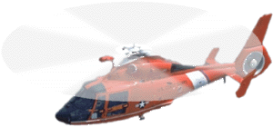

Helikopter
A helikopter olyan aerodinamikus légi jármű, amely motor segítségével forgatott szárnyakkal tudja önmagát a levegőbe emelni. Repülési magasságát és irányát nem szárnyakkal és vezérsíkokkal, hanem a forgószárnyak állásszögének változtatásával tudja szabályozni. A helikopter szó a görög helix (csavar) és pteron (szárny) szavakból keletkezett. A motormeghajtású helikoptert a szlovák származású Jan Bahyl találta fel. Az első stabil, sorozatban gyártott típust Igor Sikorsky tervezte. Asbóth Oszkár mérnök az I. világháború után a merev légcsavarral való hosszú kísérletezés eredményeként megépítette helikopterét, amely először 1928. szeptember 9-én szállt fel egy helyből, függőleges irányban a magasba. Gépe vízszintes irányban is kormányozható volt. Sikerei Európa-szerte új lendületet adtak a korábban megoldhatatlan problémának tekintett helikopterkutatásnak. Kísérleteinek úttörő szerepét és jelentőségét a nemzetközi szakirodalom is elismerte.
A merevszárnyú gépekhez képest a helikopterek sokkal összetettebbek, drágábbak, körülményesebb a fenntartásuk és kisebb a teherbírásuk. Jelentős előnyük viszont, hogy a helikoptert a levegőben tartó felhajtóerő megteremtéséhez a helikopternek nem kell viszonylag nagy sebességgel mozognia, mint a repülőgépeknek: a helikopter képes egy helyben függeszkedni, hátrafelé haladni, és mindenek felett függőlegesen egészen kis helyen is le- és felszállni. Pusztán a töltőállomások helye korlátozza mozgásterét.
⏫
A helikopter története

I.e. 400 körül a kínai gyerekeknek volt egy ehhez hasonló játékuk. Véletlen egybeesés, hogy a Wright fivérek gyermekkorukban kaptak egy ilyen röptető játékot, amely teljesen lenyűgözte őket. A kereskedelem révén ez a játék bejárta egész Európát, valamint egy festmény is készült róla.
Az első elképzelés egy emberszállító helikopterről Leonardo da Vinciben fogalmazódott meg a 15. században, de csupán a 20. században, a motormeghajtású repülőgépek után kezdődhetett meg gyártásuk. Ezen gépek úttörői többek közt Jan Bahyl, Louis Breguet, Paul Cornu, Juan de la Cierva, Emile Berliner, Ogneslav Kostovic Stepanovic, Heinrich Focke és Igor Sikorsky voltak. Az első irányított repülést Raúl Pateras de Pescara végezte el Buenos Airesben 1916-ban. A magyar Asboth Oszkár szerepét a helikopter kifejlesztésében némelyek vitatják, egyes források szerint Kármán Tódor munkásságát sajátította ki.
Egy 1922-ben készült rövid dokumnetum videón megtekinthetjük egy helikopter próbarepülését. A felvétel Párizsban készült az Issy-les-Moulineaux repülőtéren.
A felhajtóerő
A hagyományos, merevszárnyú repülőgépek azon az elven működnek, hogy a gép szárnyai fölött és alatt előrehaladás közben légnyomáskülönbség alakul ki, így felhajtóerő képződik. A helikopter ugyanezt a fizikai elvet használja ki, azzal a különbséggel, hogy csupán a rotorlapátokon keletkezik felhajtóerő, nem a gép szárnyain (ha egyáltalán vannak, a szárnyakon keletkező felhajtóerő elhanyagolható a rotorokon képződő erőhöz képest).
A rotor forgatásának reakciónyomatéka azonban az ellenkező irányba forgatná a helikopter törzsét, ezért egy kisebb, vízszintes tengelyű hátsó rotort használnak, ami ellensúlyozza a forgatónyomaték hatását. Ezt a légcsavart néhány modellnél beleágyazzák a farokrészbe, így kevésbé károsodhat, kisebb veszéllyel van a körülötte tartózkodókra, és a légellenállása is kedvezőbb.
Egy másik mód az ellentétes forgás kiküszöbölésére, ha két, egymás fölött, mellett, vagy mögött elhelyezett, ellentétes irányba forgó rotort használnak, mint például a Boeing CH–47 Chinooknál vagy a Kamov Ka–50-nél. A két, egymás feletti rotorelrendezésű változatot koaxiális elrendezésnek nevezik, mivel a rotorok meghajtótengelyei koaxiálisan (egymásban) helyezkednek el. Ezt az elrendezést Nyikolaj Kamov terjesztette el az 1950-es években, és gyakorlatilag az összes Kamov helikopter ezzel az elrendezéssel készült.
Döntő fontosságú a helikopter megpördülésének ellensúlyozásához szükséges erő beállítása. A farokrotor a hajtómű teljesítményének 30%-át felemészti, és nem segít a helikopter felemelésében vagy mozgatásában. Éppen ezért a helikopter farokcsúcsát meghajlítják, hogy az nagy sebességnél a légáramlást kihasználva ellensúlyozza a forgatóhatást és több erőt hagyjon a főrotornak. Ez azonban nehézzé teheti az egy helyben lebegést szeles napokon.
Irányítás
Természetesen a helikopternek is kormányozhatónak kell lennie. Ezt a problémát a repülőknél viszonylag könnyen meg lehet oldani vezérsíkokkal és kormánylapokkal, amelyek a légáramlat elterelésével megváltoztatják a haladási irányt. A helikoptereknél azonban a relatíve kis sebesség miatt ez nem elégséges.
A függőleges tengely menti elfordulást a farokrotor fordulatszámának növelésével vagy csökkentésével is el lehet érni, de általában a farokrotor-lapátok állásszögének változtatásával oldják meg. A duplafőrotoros (koaxiális) gépeknél ezt a hatást a két - egymásnak szembeforgó - főrotor eltérő sebességű forgásából adódó reakciónyomaték kihasználásával érik el. A helikopter kialakításától függetlenül a függőleges tengely körüli elfordulás vezérlése a pedálokkal történik.
A helikopter megdöntéséhez (előre, hátra) illetve az oldalirányú repüléshez a rotorlapátok állásszögét az adott oldalon megdöntik, azaz megváltoztatják a rajta ébredő légáramlást, így az egyik oldalon nagyobb lesz a felhajtóerő, mint a másikon. Ezt az eljárást ciklikus állásszög-szabályozásnak nevezik, mivel az adott oldalon egy bizonyos szögben álló lapát a forgás következtében, átérve a másik oldalra, az ott beállított szöget kell felvegye, majd forgás közben visszaérve a kiinduló oldalra ismét az itt beállított szöget veszi fel és kezdődik az egész elölről. Ebből következik, hogy minél több lapátból áll a főrotor, annál bonyolultabb mechanikai vezérlés szükséges a megfelelő működéshez. A korszerű rotorvezérlés a lapátok tehetetlenségét is figyelembe veszi, azaz úgy számítják ki az egyes lapátok szögvezérlésének az előtolását, hogy azok pont az optimális tartományban vegyék fel a beállítási pozíciójukat, ezzel is segítve a helikopter stabilitását.
A helikopter irányítására a pedálokon kívül három vezérlőrendszer szolgál. A kollektív kar (collective pitch control lever) az összes rotorlapát állásszögét egyszerre változtatja (az emelkedést és ereszkedést szabályozva).
A sebességvezérlő szabályozza a hajtómű fordulatszámát. Ez általában egy forgó markolat az előbb említett karon. A helikopterek rotorjait egy adott fordulatszámra tervezik, és ettől csupán néhány százalékkal szabad eltérni. Ezt a folyamatot a kisebb gépeken általában a pilótának kell szemmel tartania, de az újabb helikoptereken ezt már egy szervo-visszacsatolású automatika (governor) elvégzi a pilóta helyett.
A ciklikus vezérlő segítségével lehet a rotorlapátok beállítási szögét a forgási sík valamelyik oldalára nézve megváltoztatni és a helikoptert ezzel a vízszintes síkban mozgásba hozni. Ez a vezérlő a pilóta előtti botkormány.

A rotorlapátokon tapasztalható légáramláshaladás közben az egyik oldalon a rotor fordulatszámával plusz a helikopter repülési sebességével, a másik oldalon pedig a rotor fordulatszámával mínusz a helikopter repülési sebességével számítva alakul (szélnekforgó illetve szélbőlforgó lapátok), így a két oldalon különböző nagyságú felhajtóerő lép fel. Ennek ellensúlyozására a rotorlapátvezérlő rendszer és/vagy a lapátok fel-le hajlását engedő mechanizmus ciklikusan szabályozza a rotorlapátok állásszögét ennek ellensúlyozására is. Ebből a sajátosságból ered a helikopterek maximális sebességhatára, mivel ha a szélbőlforgó oldalon az eredő légsebesség kritikusan lecsökken, azon az oldalon a felhajtóerő is megszűnik.
Továbbá, ha bármely szárnyon túl nagy az állásszög, ideértve a rotorlapátokat is, a szárnyat körbevevő lamináris áramlás megtörik és ezzel együtt megszűnik a felhajtóerő. Ezt az aerodinamikában átesésnek hívják. Egy helikopter esetében ez az alább felsorolt három módon fordulhat elő:
-
Ahogyan nő a helikopter sebessége, a szélnekforgó lapátok elérik a hangsebességet és lökéshullámokat okozhatnak a lapát felett, ami szuperszonikus áteséshez, vagyis a felhajtóerő eltűnéséhez vezet.
-
A szélbőlforgó lapátokon (a rotor szélbőlforgó oldalán) kisebb sebességű eredő légáramlat mérhető, ezt a vezérlőrendszer meredekebb támadási szöggel próbálja korrigálni. Ha túl alacsony az eredő légáramlat és túl meredek a támadás szöge, az átesés elkerülhetetlen.
-
Ha alacsony fordulatszámon túl nagy támadási szöget állítunk be, szintén átesés következik be.
A helikopter, bár motormeghajtású jármű, motorhiba esetén képes a lapátok lendületét, valamint a biztonságos magasságból történő lefelé irányuló mozgást együttesen kihasználni. Ezt autorotációnak nevezik. Ilyenkor az alulról érkező "megfújásnak" megfelelően a gyorsan ereszkedő helikopter lapátjait negatív szögbe állítják, és ettől a rotor a jó irányban forog tovább. Ilyenkor van pár pillanat egy megfelelő leszállóhely kinézésére, amely fölött - a kellő időben - pozitívba visszaállított rotor termel még annyi felhajtóerőt, hogy a helikopterrel le lehessen szállni.
A helikoptereket úgy tervezik, hogy még a hajtómű leállásakor is működjön a farokrotor (ezt gyakorlatilag a főrotorral direktben kapcsolt áttétellel oldják meg), így a helikopter működő motor nélkül is irányítható marad, amíg a főrotor forgásban van.
A ciklikus vezérlőrendszer egyik további érdekessége, hogy a lapátokat a gép sajátosságainak megfelelően x fokkal a kívánt haladási irány előtt szabályozzák, amely nem összekeverendő a már említett lapát-tehetetlenségi előtolással. Ez a szabályzás azért van, mert egy forgásban lévő testet, ha kibillentünk a forgási síkjából, például egy rotorlapátot, akkor az azon ébredő precessziós nyomaték erőhatása visszahat a helikopterre. Ezt giroszkopikus precessziónak is nevezik. Egy korszerű helikopter vezérlőrendszere mindenkor figyelembe veszi a rotor forgási irányát, valamint a repülés irányát és ezeknek megfelelően módosítja a ciklikus vezérlést. A feltalálóknak sok-sok évébe tellett, mire felismerték ezt a folyamatot, és sikerült áthidalniuk ezt a problémát.
A rotormeghajtás korlátai
A helikopter legszembetűnőbb hátránya a repülőgépekhez képest alacsonyabb végsebesség. A régi csúcsot a Westland Lynx tartotta 400 km/h-val, de a koaxiális főrotorral és tolólégcsavarral felszerelt Sikorsky X2 450 km/h fölé tolta ezt a határt. Számos oka van annak, hogy egy helikopter miért nem repülhet olyan gyorsan, mint egy repülő.
-
Lebegés közben a rotorlapátok csúcsai a lapátok hossza által meghatározott sebességgel mozognak. Egy mozgó helikopternél azonban az előrehaladó lapátnak a levegőhöz viszonyított sebessége sokkal nagyobb, mint magáé a helikopteré, és akár a hangsebességet is elérheti, ez rázkódást és lökéshullámokat kelt. Elméletileg lehetséges spirálszerűen forgó lapátokat használni, de jelenleg nincs olyan anyag, ami elég erős, könnyű és rugalmas ehhez.
-
A legtöbb rotor nem merev. Mivel az előrenyomuló lapát erősebb légáramlattal találkozik, mint a visszavonuló, egy teljesen merev lapát azon az oldalon nagyobb felhajtóerőt keltene és megdöntené a helikoptert. Éppen ezért a rotorlapátokat "csapkodásra" – elhajlásra és csavarodásra tervezték, hogy az előrenyomuló lapát felcsapódjon és kisebb támadási szöget produkáljon, ezzel kisebb felhajtóerőt hozva létre, mint amekkorát egy merev lapát. Ezzel szemben a visszavonuló pengék lefelé hajlanak, így nagyobb támadási szöget írnak le és nagyobb felhajtóerőt hoznak létre. Nagy sebességnél a lapátokra ható erő miatt azok csapkodni kezdhetnek, ekkor a visszavonuló lapátok túl nagy szöget érnek el, majd túlhúzódnak. Néhány típusnál a fedő merev. A lapátok összetettek, melyek anélkül képesek meghajlani, hogy eltörnének. Léteznek teljesen merev lapátosak is, melyek kiváló helikoptereket alkotnak. Ezeknél a felhajtóerőt ciklusonként változtatják a helikopter sebességének megfelelően. Ezt vagy a támadás szögének változtatásával érik el, vagy pedig a hajtómű által működtetett szívóberendezéssel, amely levegőt szív be a lapátokon keresztül.
-
Meghatározó tényező a rotorfej kialakítása. Alacsony, vagy negatív gravitációs értékeknél a lefelé csapkodó lapátok eltalálhatják a farokrészt, vagy más részét a helikopternek.
-
A helikopterek különösen érzékenyek a forgószél jellegű hatásokra. A rotor által lefelé fújt levegő szélörvényt kavar a rotor körül. Ha ezt tovább fokozza a terep, szél, eső, vagy tengeri hullámok tajtéka, akkor elég felhajtóerőt veszíthet ahhoz, hogy lezuhanjon.
A 20. század vége felé a tervezők hozzáláttak a helikopter hangjának csökkentéséhez. Számos civil egyesület panaszkodott a zajos rendőrségi helikopterekre, ami több leszállóhely bezárásához és a helikopterek nemzeti parkokból való kitiltásához vezetett.
A helikopterek rázkódnak. Egy rosszul beállított helikopter akár szét is rázhatja magát. Ennek csökkentésére az összes helikopter rotorját magasság és dőlés szerint állítják be. Némelyeknek mechanikai figyelőrendszere van, ami érzékeli a rezgéseket és ellenrezgéseket indít. Általában szilárd viszonyításként egy súlyt használnak, majd a lapátok támadási szögét változtatva kisimítják a rezgéseket. A beállítások elvégzése nehéz, mivel ehhez pontosan mérni kell a vibrációt. A legelterjedtebb módszer villogó fénnyel megfigyelni a rotorlapátok alján lévő festéseket, vagy színes lámpákat. A hagyományos módszer során fehér krétával megjelölik a lapátok végeit, majd megfigyelik, hogy milyen nyomot hagy a vásznon.
Felhasznált források a Wikipédia oldalakról:
Helikopter,
Kamov (2021. január. 29.)